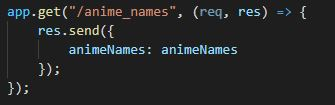
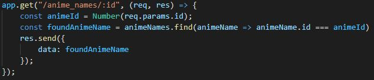
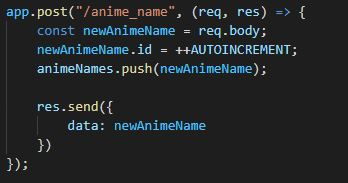
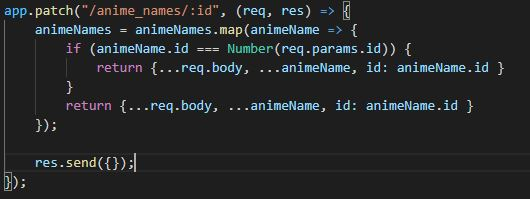
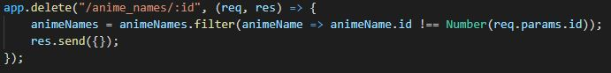

CRUD or Create Read Update Delete
CRUD is the corner stone of any application, we want to be able to create read update and delete content in almost any application. Without it this website wouldn't be able to teach you how to do any of this! This following page will guide you through how to implement some basic crud methods in nodeJS and express
Designing your API
Before any implementation should begin, it is a good idea to create an overview of how your API should function

The above image shows us an overview of an API for creating, reading, updating and deleting a cars database. Note that not all of these endpoints and HTTP methods are used. For example, using the POST method with just /cars and the user specificying what ID the car should have is not good practice
1. the GET method
The GET method as the name suggests is a method that gets something. It could be an entire file or some sort of JSON, any data that you want to send to the user
This first example is a simple get method that gets all of our animes at the endpoint /anime_names
The second get method gets a specific anime defined by an ID. This ID is directly taken from the URL that the user input. /anime_names/1 would get the anime with the ID of 1
By using the find method we are able to search our database for an anime with the correct ID. Note that we use === instead of == to make sure it is not a truthy value but a hard true value
2. the POST method
The post method is as well named because it posts something. It is used to create data
In the following method we use the endpoint /anime_name and use an HTTP post to send a new anime to the server inside the post body. Using postman we are able to test if this function works
3. the PUT/PATCH method
The put/patch method are similar and are used to update already existing data
In the following example we use the endpoint /anime_names/id where the user specificies the ID in the URL and finds the object and updates it with the data in the body of the request
4. the DELETE method
The delete method is as it is named, used to delete data
The user once again specifies what data should be deleted by accessing the endpoint /anime_names/id
